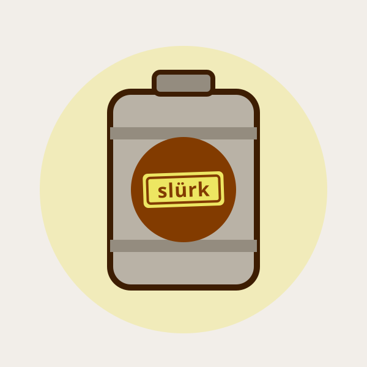

Frescor acima de tudo
Cerveja é alimento vivo. Produzimos pouco, vendemos rápido e nunca deixamos um lote envelhecer na prateleira.
Uma panela emprestada, muita teimosia e a certeza de que cerveja boa se faz com tempo e verdade.
A slürk nasceu em 2025, quando três amigos cansados de cerveja sem graça decidiram brassar o próprio chope em uma panela de 20 litros. O primeiro lote saiu torto. O segundo, melhor. No décimo, os vizinhos começaram a bater na porta com growler na mão.
Hoje temos uma fábrica de verdade na Vila Madalena, mas o espírito é o mesmo: pequenos lotes, receitas autorais e a obsessão por servir a cerveja mais fresca da cidade.
Acreditamos que cerveja boa não precisa ser complicada nem cara. Nossa missão é colocar cerveja fresca, honesta e cheia de personalidade na mesa de todo mundo — do iniciante ao beer geek.

Trabalhamos com brassagens semanais de 500 litros — o suficiente para manter a qualidade e a frescura, nunca para acumular estoque. Maltes vêm da Alemanha e da Bélgica; os lúpulos, dos Estados Unidos e da Nova Zelândia; a levedura é cultivada aqui mesmo, no nosso laboratório.
Cada lote passa por painel sensorial antes de ir para a pressão. Se não estiver no ponto, não sai. Simples assim.
Cerveja é alimento vivo. Produzimos pouco, vendemos rápido e nunca deixamos um lote envelhecer na prateleira.
Ingredientes, processos e datas de brassagem abertos. Pergunte o que quiser — a gente adora falar de cerveja.
Compramos de produtores locais, apoiamos eventos do bairro e recebemos homebrewers na fábrica todo mês.
Cerveja boa se aprecia com calma. Promovemos o consumo consciente e nunca vendemos para menores de 18.